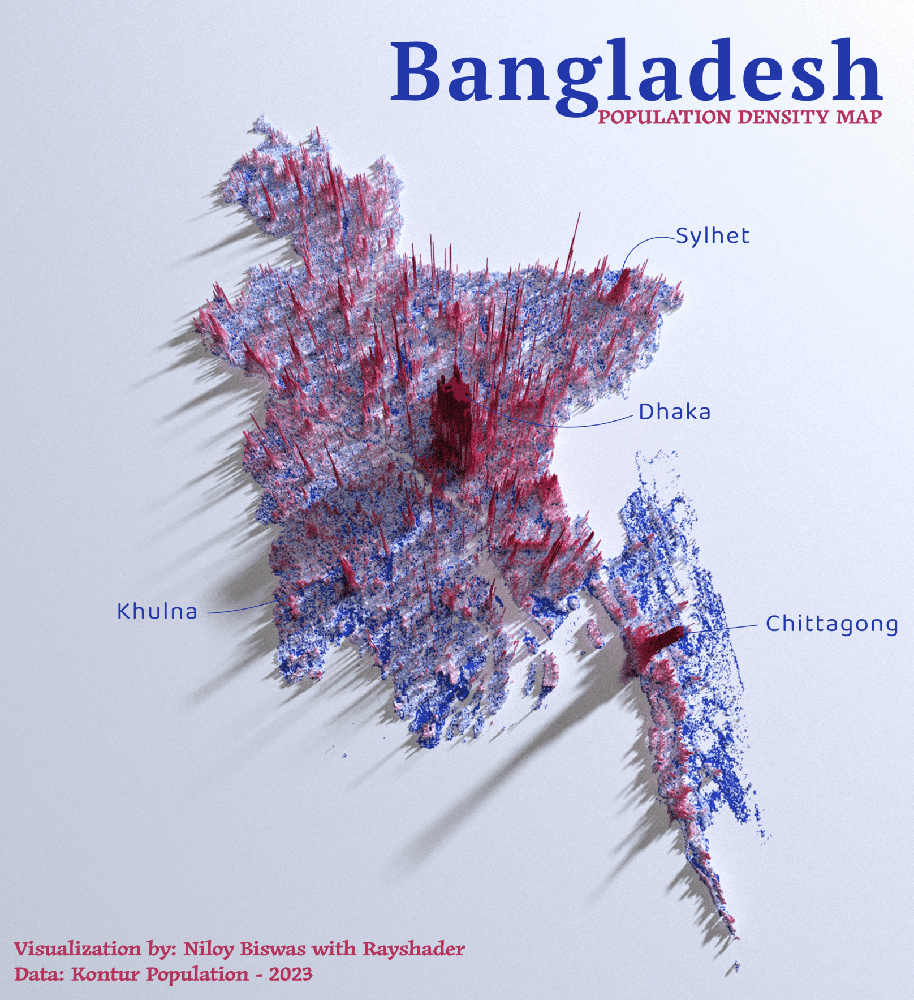
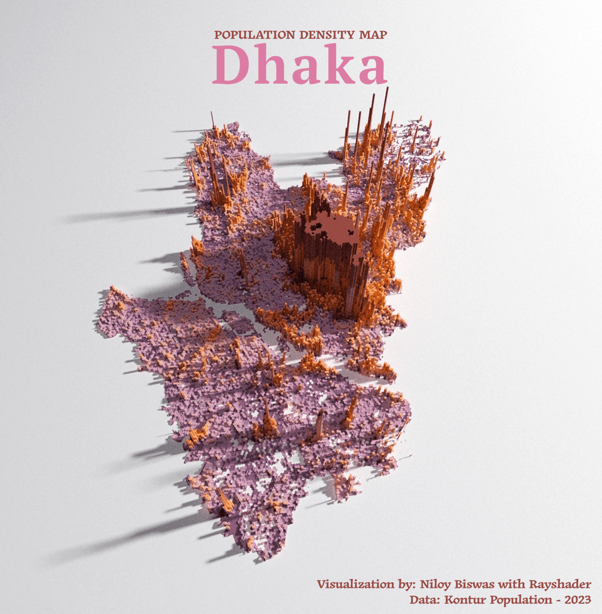
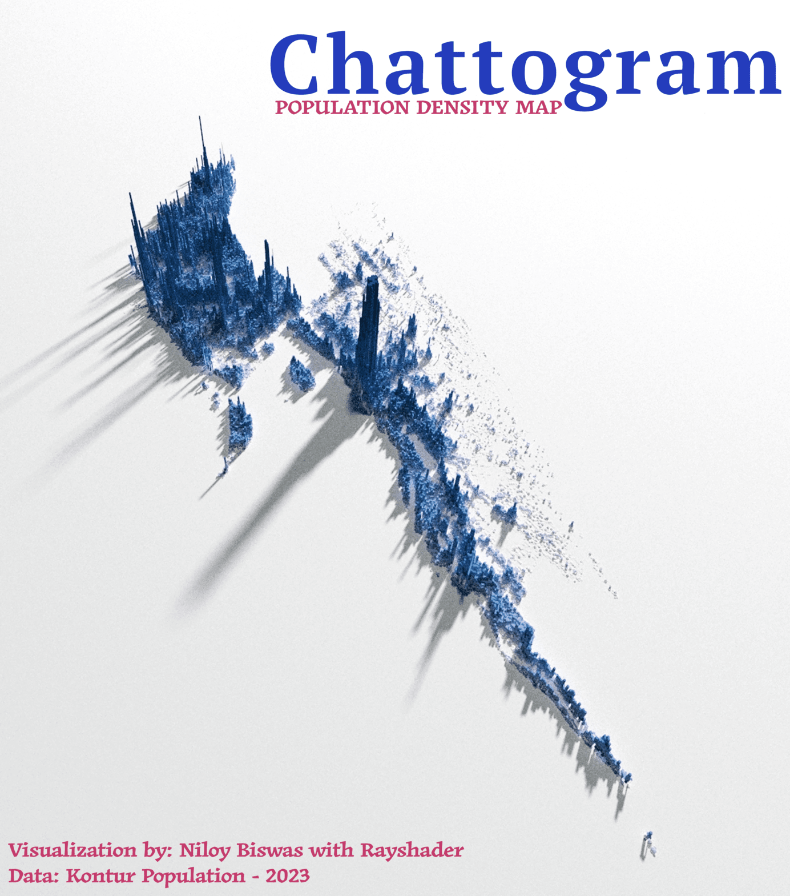

<div class="container">
                <div class="row mh-portfolio-modal-inner">
                    <div class="col-10 offset-1">
                        <h2>3D Population Density Map using R-Programming and Rayshader Library</h2>
                        <p>Lets embarked on a journey of visual storytelling. <br>
                            💡 Discoveries on this global exploration:
                        <ul type="disc">
                            <li>- Refined skills in R packages for spatial data manipulation and crafting 3D
                                visualizations.</li>
                            <li>- Transforming complex demographic data into captivating visual narratives, extending
                                beyond Bangladesh.</li>
                            <li>- A comprehensive guide to creating 3D population maps with a focus on South Asian
                                countries.</li>
                        </ul>
                        </p>
                        <div class="mh-about-tag">
                            <ul>
                                <li><span>Data Analytics</span></li>
                                <li><span>R Programming</span></li>
                                <li><span>Rayshader</span></li>
                                <li><span>3D Plot</span></li>
                            </ul>
                        </div>
                        <a href="https://medium.com/@niloy.swe/how-to-create-a-3d-population-density-map-in-r-33dfaf7a71d7"
                            target="_blank" rel="noopener noreferrer" class="btn btn-fill">Source: Medium - Step by step procedure <span class="icon-external-link" aria-hidden="true"></span></a> <br><br>
                        <a href="https://github.com/niloy-biswas/Population-Density-Map" target="_blank"
                            rel="noopener noreferrer" class="btn btn-fill">Source: Github <span class="icon-external-link" aria-hidden="true"></span></a>
                    </div>
                    <div class="col-10 offset-1">
                        <div class="mh-portfolio-modal-img">
                            <br>
                            <h2>Population Density Map - Bangladesh</h2>
                            <p>Bangladesh - With a population exceeding 160 million, the nation pulsates with vitality.
                                Explore the intricacies of this densely populated haven, each region telling a unique
                                story through the sheer density of its inhabitants.</p>
                            

                            <br>
                            <h2>Population Density Map - Dhaka Division</h2>
                            <p>Dhaka - As the bustling capital of Bangladesh, with a population of more than 44 million
                                people, the city exudes life. Immerse yourself in the complexities of this densely
                                populated metropolis, where each district tells a unique tale due to the sheer density
                                of its residents.</p>
                            

                            <br>
                            <h2>Population Density Map - Chittagong Division</h2>
                            <p>Chittagong Division - Nestled in the scenic landscapes of Bangladesh, with a population
                                exceeding 5.5 million, Chittagong Division resonates with diverse energy. Situated near
                                the breathtaking Cox's Bazar, home to the world's longest sea beach, explore the vibrant
                                tapestry of this densely populated region.</p>
                            

                            <br>
                            <h2>Population Density Map - India</h2>
                            <p>With a population of over 1.3 billion people, India pulsates with dynamic diversity.
                                Explore the complexities of this densely inhabited refuge, where each state tells its
                                own story via the sheer density of its population.</p>
                            

                            <br>
                            <h2>Population Density Map - Sri Lanka</h2>
                            <p>Sri Lanka's with a population over 22 million people, is vividly brought to life in our
                                3D Population Density Map. The map highlights key areas like Colombo, with its dense
                                urban population, and contrasts them with the more sparsely populated rural regions,
                                offering a comprehensive view of demographic distribution across the island.</p>
                            

                            <br>
                            <h2>Population Density Map - Nepal</h2>
                            <p>Nepal's population, exceeding 29 million, is dynamically illustrated in our 3D Population
                                Density Map. This map accentuates major areas such as Kathmandu, showcasing its densely
                                populated urban landscape, and juxtaposes it with the less populated, remote mountainous
                                and rural areas, providing a detailed perspective on the population spread throughout
                                the country.</p>
                            

                            <br>
                            <h2>Population Density Map - Bhutan</h2>
                            <p>Bhutan, with a population of about 750K, is vividly captured in our 3D Population Density
                                Map. The map showcases the stark contrast between densely populated regions and the
                                expansive, sparsely inhabited Himalayan areas, offering a clear and comprehensive view
                                of how the population is distributed across this tranquil mountain nation.</p>
                            

                            <br>
                            <h2>Population Density Map - Myanmar</h2>
                            <p>Myanmar, with a population exceeding 54 million, is effectively illustrated in our 3D
                                Population Density Map. This map highlights the dense urban areas contrasted with less
                                populated rural regions, providing an extensive view of the diverse population
                                distribution throughout the country.</p>
                            
                        </div>
                    </div>
                </div>
            </div>
